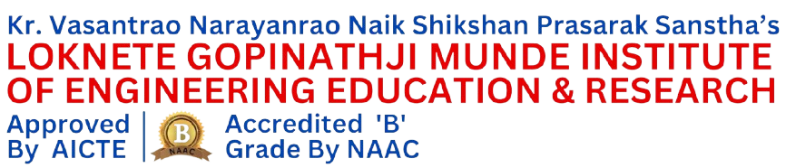

About Me
🎓 Education
- BE in Information Technology – Terna Engineering College, Nerul (2021–2024)
-  Diploma in Computer Engineering – Loknete Gopinathji Munde Institute of Engineering Education & Research, Nashik (2019–2021)
💼 Internships
- Data Analyst Intern – Guardneer (June 2024 – Dec 2024)
- Java Intern – MIRA Technology Institute, Thane (2023)
Hello! I'm Rutikesh Pawar, a data analytics enthusiast with a passion for turning numbers into narratives. I have completed a 6-month internship at Guardneer, where I developed data-driven solutions in smart farming, water optimization, and customer segmentation.
I specialize in Python, SQL, Tableau, Power BI, Excel, and Machine Learning. My work focuses on solving real-world problems—like improving agricultural efficiency, identifying at-risk water systems, and segmenting users for personalized service strategies.
My projects often combine technical rigor with a user-focused approach. From designing scalable dashboards to implementing end-to-end ML pipelines, I’m comfortable across the full data lifecycle—from wrangling to storytelling.
Certifications & Tools:
- ✔️ Python for Data Science – DevTown
- ✔️ Data Analytics & Data Science – ExcelR
- ✔️ Microsoft Excel & Power Query
- ✔️ MySQL, PostgreSQL, SQLite
- ✔️ Tableau Public & Desktop, Power BI
- ✔️ Pandas, NumPy, Matplotlib, Seaborn
My Vision: I aim to become a top 1% data professional contributing to solutions that impact millions—whether it’s in agriculture, sustainability, public systems or any time of sector. I'm working toward landing a high-paying analytics role and continually sharpening my problem-solving mindset.
Let's Connect
You can reach me at: